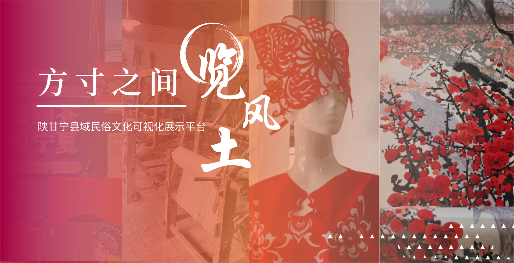
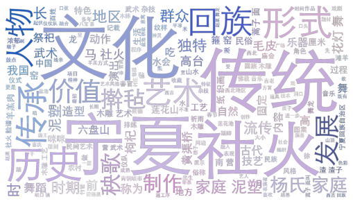
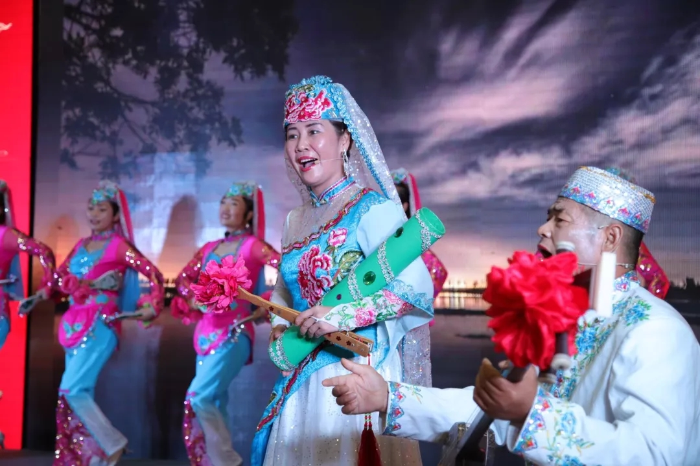
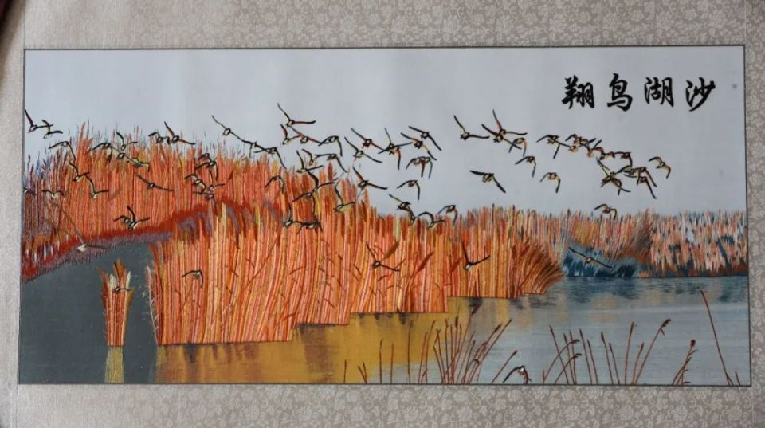
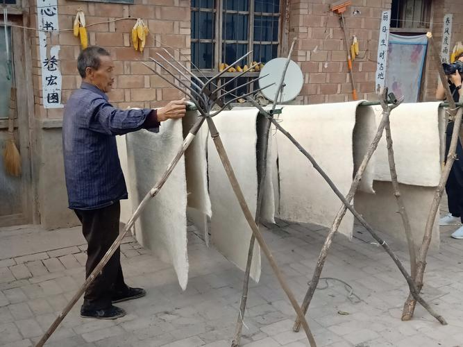
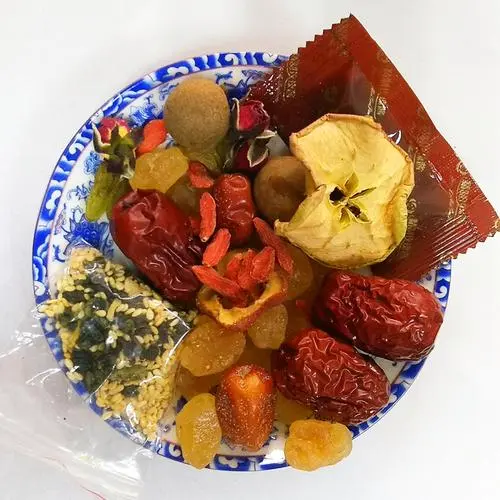
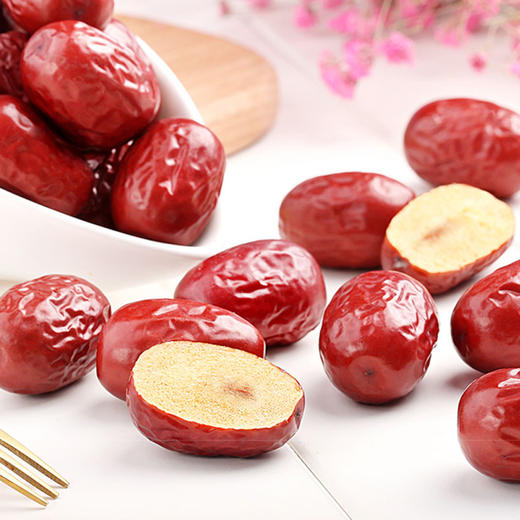
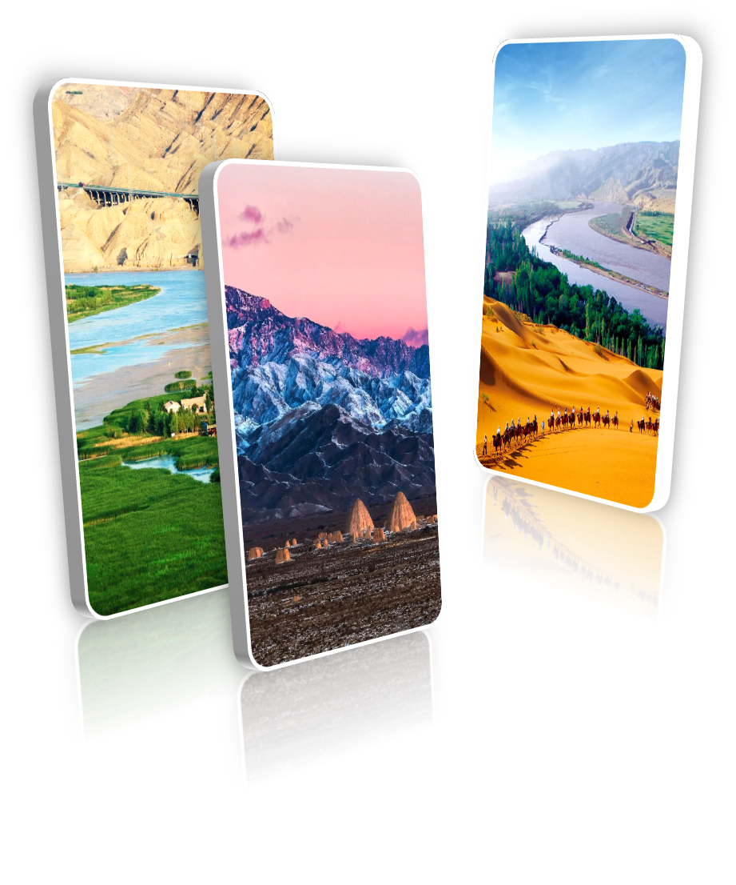

览风土
首页
|
民俗可视化
|
民俗地图
|
特色产品
|
关于我们

Platform Introduction
平台简介
固原砖雕 >>>
回乡刺绣 >>>
“秦壁大篇怡曲韵，凉风送爽绕天涯。”，“锦缥细展墨花翻，河东二柳敦煌索。”，“瓶开枸杞悬泉水，鼎炼芙蓉伙火沙。”……一方水土养一方人，祖国西北大地滋养出的人们吹着热烈豪放的风，粗粝的双手在黄土地中种出最滋补的果子，唱着最高昂的调子，闹着最火热的节日。 古时的烈风只带起散落的诗句，而今日我们在互联网的快车道上，立足西北大地的独特民俗文化，通过数据搜集、数据库搭建、访谈调研搜集陕甘宁县域民俗文化资料，运用可视化呈现的方式将生动热烈的民俗文化铺展，巧借创新活水，为民俗文化传播赋能。
Folk Visualisation
民俗可视化

我们对收集到的陕甘宁民俗文化数据进行了可视化的数据分析，从左图一的词云图可以看出，陕甘宁地区特色民俗文化种类繁多、形式多样，不仅包括手工艺品、美食、传统节日，还包括了建筑、音乐、服饰等等，十分具有传承意义。
左图二是对收集到的民俗文化数据进行的分类统计。我们对其进行分类，共有20类民俗文化，涵盖了衣食住行多个方面，其中工商业特色民俗较多，共有55个；饮食方面次之，共有28个。其他具体数据都在途中有所体现。
左图三是对甘肃省民俗文化汇总的树状图，一级分支为地级市，二级分支是区县，数字代表此区县共有多少种特色民俗。
Folk Map
民俗地图
了解更多>>
了解详情
>>>

>>>
>>>
>>>

>>>

Featured
了解更多> > >
特色产品

八宝茶
了解详情
中宁枸杞
了解详情

灰枣
了解详情
Folk Video
民俗文化访谈
Your browser does not support the video tag.
About us
关于我们

方寸之间览风土是一个由西安交通大学网络与新媒体专业的五名同学搭建的陕甘宁县域民俗文化传播平台，意在借助互联网技术，使民俗文化得以摆脱其在现实中传播的时间、空间的局限性。
通过创意设计和技术实现，将民俗文化转化为具有视觉冲击力和艺术感染力的可视化作品，并依托视觉呈现尝试引流当地特色农产品，使其落地为促进经济增长、提高人民生活水平的有效途径。在提高陕甘宁民俗文化的传播度和影响力的同时，为其注入新的生命力和时代价值。